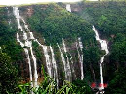
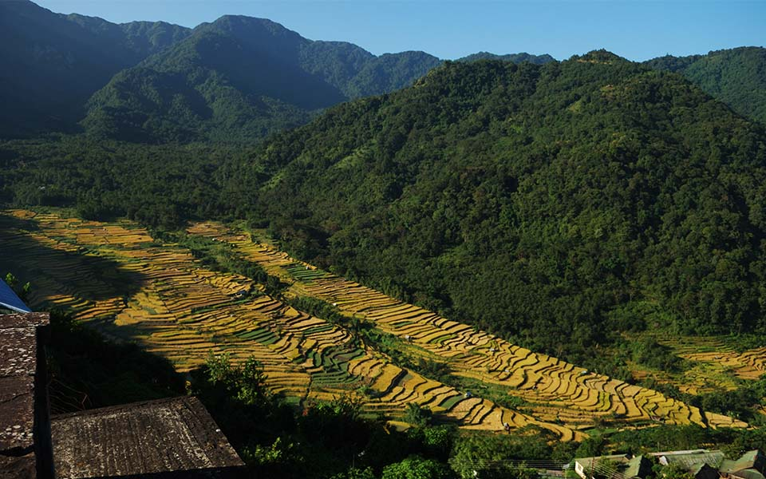
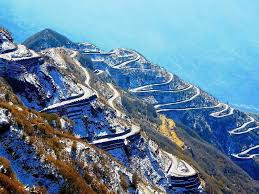

Kaziranga National Park
A UNESCO World Heritage Site, home to the largest population of one-horned rhinoceroses and diverse wildlife.

Cherrapunji
One of the wettest places on Earth, famous for its living root bridges and breathtaking waterfalls.

Dzukou Valley
A trekker’s paradise, known for its rolling green hills and seasonal wildflowers, including the rare Dzükou Lily.

Khonoma
India’s first green village, where conservation meets heritage in a stunning mountain setting.

Loktak Lake
The largest freshwater lake in Northeast India, famous for its floating islands (phumdis) and Keibul Lamjao National Park.

Zuluk
A hidden gem on the historic Silk Route, offering breathtaking views of the Eastern Himalayas

Tawang
Home to the largest Buddhist monastery in India, nestled in the majestic Himalayas.